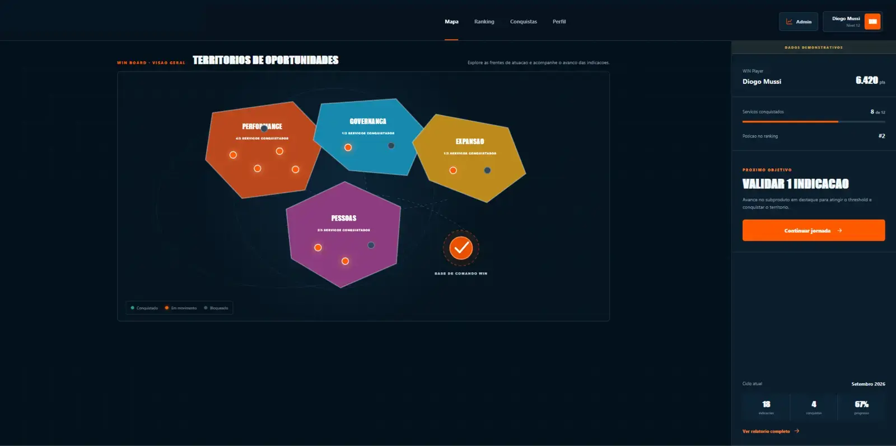
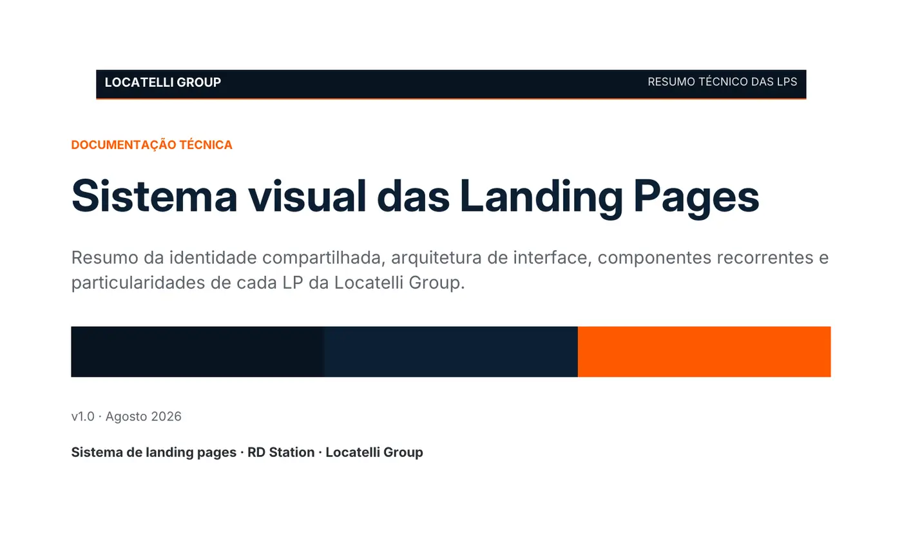

Programa WIN
Indicações entre áreas em uma experiência gamificada, com operação administrativa e dados auditáveis.
Baseline local 0.3.1 · Homologação pendente
Portfólio pessoal / Diogo Mussi
Sou Diogo Mussi. Conecto growth, UX e engenharia de produto — do trabalho profissional aos estudos que desenvolvo por conta própria.
Explorar trabalhos01 / Prática profissional
Projetos desenvolvidos no contexto da Locatelli Group, apresentados com seus estágios e limites.

Indicações entre áreas em uma experiência gamificada, com operação administrativa e dados auditáveis.
Baseline local 0.3.1 · Homologação pendente

Doze projetos verificados no manifesto, entre produção, testes A/B e demos, com um experimento suplementar identificado à parte.
Produção, testes e demos · Status por case
Locatelli Group / Protótipo v0.3
Projetos técnicos em uma experiência visual para o Marketing. Dados sintéticos; conectores operacionais ainda não implementados.
02 / Exploração independente
Um espaço para aprender construindo, fora do escopo dos projetos profissionais.
Projeto pessoal de estudo
Copiloto Android experimental com análise de ofertas, jornada e relatórios Excel. Desenvolvido como projeto pessoal de estudo por Diogo Mussi, sem vínculo com a Locatelli Group.
Versão 0.3.0 · Validação em aparelho pendente
Explorar o estudo03 / Como trabalho
Objetivo, experiência e implementação fazem parte do mesmo trabalho. Organizo o problema, desenho a jornada e desenvolvo a solução com critérios claros de validação.
Este é meu portfólio pessoal: reúne trabalhos profissionais e estudos independentes. Cada case identifica seu contexto, sua evolução e o que ainda precisa ser validado.
Conversar pelo GitHubFontes revisadas em . Os estágios descritos não equivalem a lançamento ou homologação dos produtos.
Voltar ao início ↑